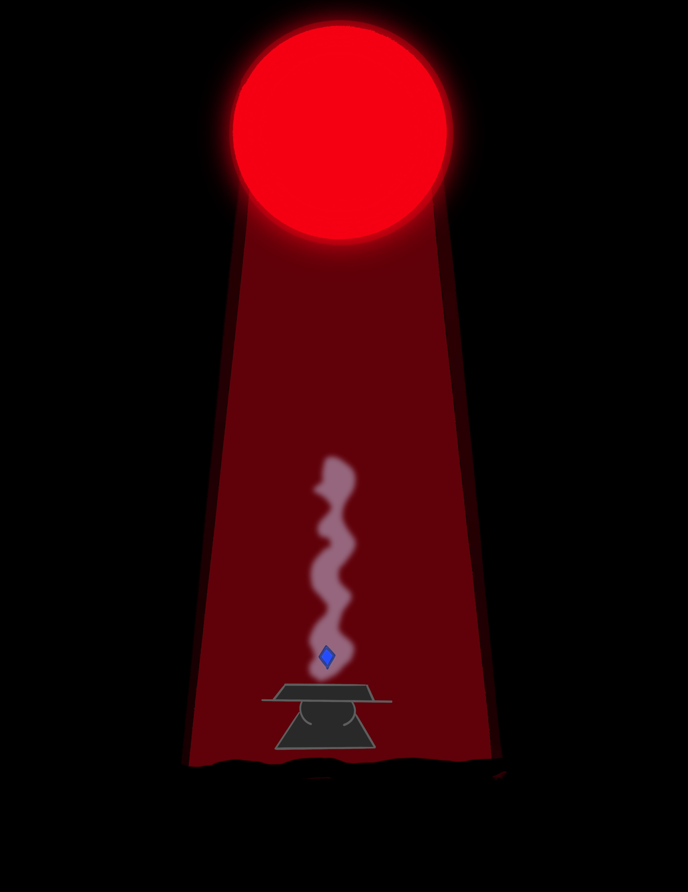

The Warrior nodded his head and set foot towards the town of Brinewatch.The warrior reached the bottom of the stairs and came to mamssive gate. The gate opened for the first time in two centuries. You see The Nameless Horror is bound to his domain and the only way for him to be set free from his own prsion he has to have to Sapphire of Northwood. With this sapphire nothing and nobody will be able to stop him.The Sapphire is guarded by the enchanted red blood moon. The red blood moon has been protecting the stone for thousands of years. Only can be broken by a person whose heart has been touched by pure darkness that was once touched by light.
